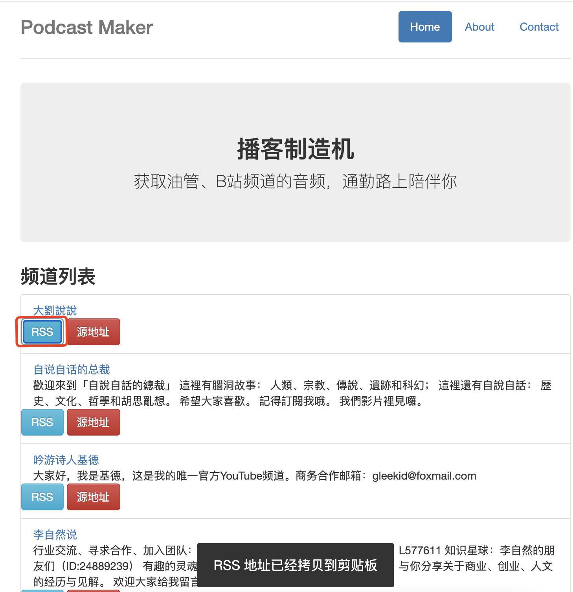
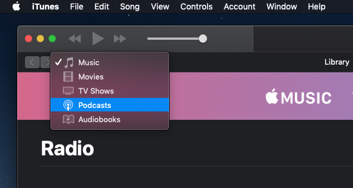
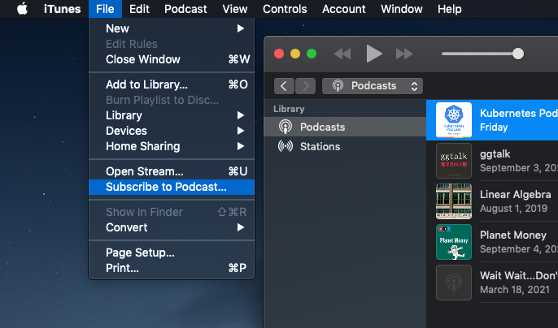
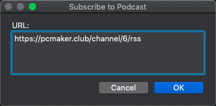
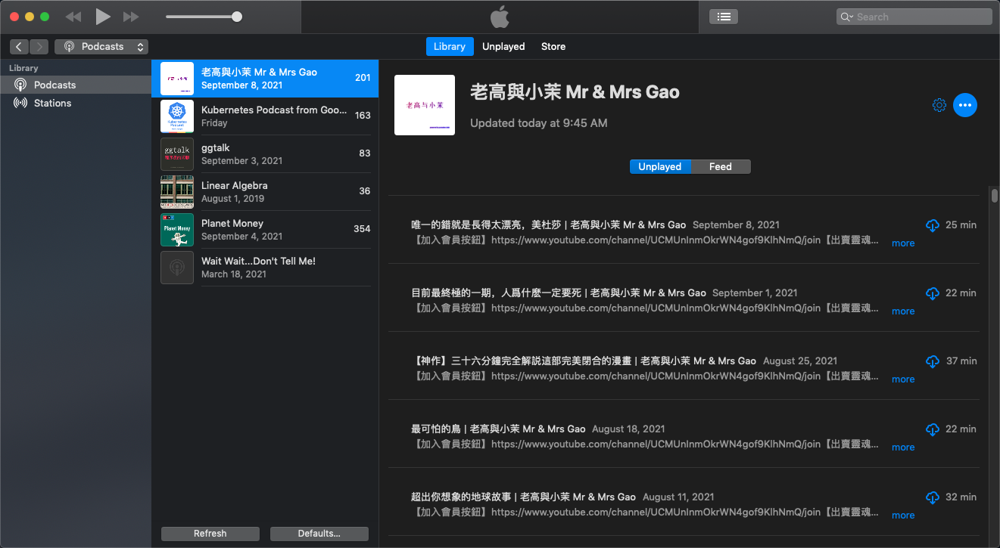
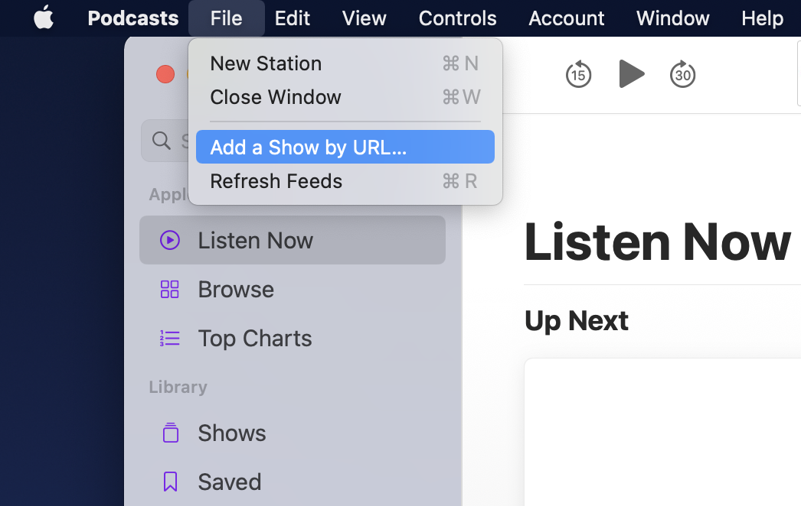
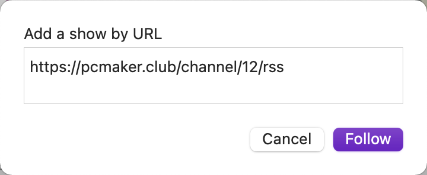
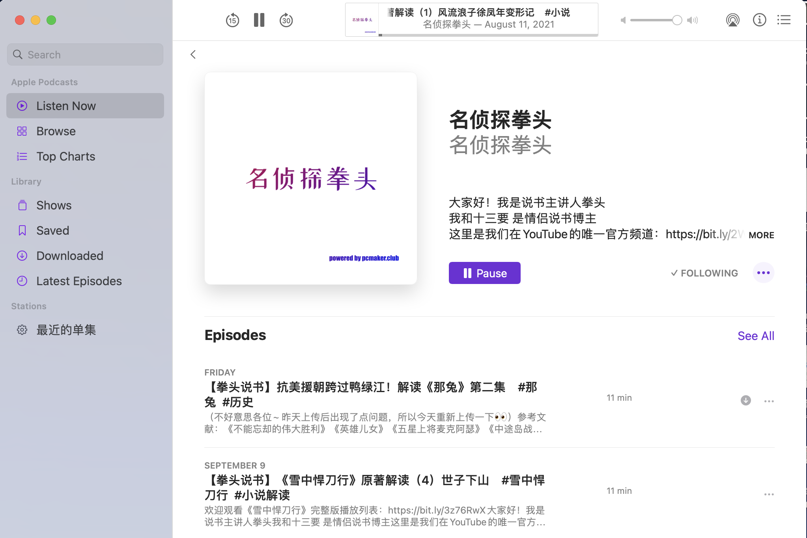
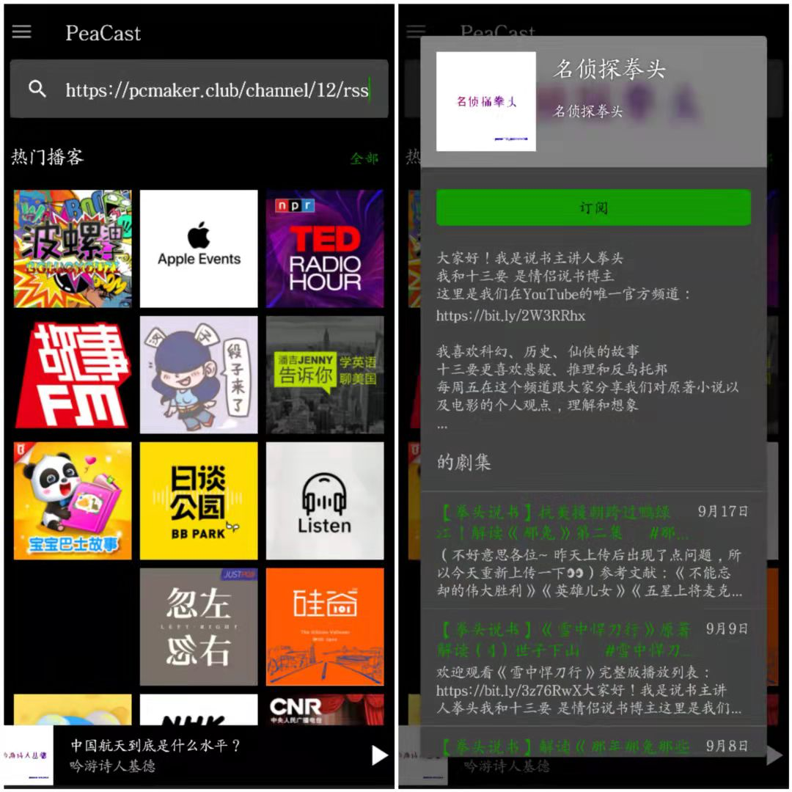

介绍
目的
Podcast Maker 这个工具的核心价值就是将油管频道转为音频播放列表。连前端界面也是极简的，你可能更需要的是每个频道对应的兼容各播客软件的 RSS 地址。关于播客软件与 RSS，强烈建议看看「全平台播客订阅及收听指南」。
如果这算是一个产品，那么整个产品分为用户端、运营端两部分。运营端生产数据；用户端渲染数据，渲染到 HTML、RSS。目前运营端没有 UI，通过命令行操作：订阅频道、生成播放列表、下载转码音频等。可以说是最简可行产品了。
制作 Podcast Maker 这个工具网站完全是从我个人需求出发的：
- 上下班开车，一边堵车一边听，时间很快就过去了；
- 上下班坐地铁，作为一个容易尴尬的人挤在人堆里看视频不合适，听听音频；
- 睡觉、休息时，听着听着，声音就成了白噪音。
为什么选择 Youtube
油管上资源很丰富，而且很多是适合作为播客收听的。但是 Youtube 收费版才支持后台收听，网络上也有 GFW 的限制，插播广告影响收听体验，这些原因限制了我听 Youtube。也是做这个工具的动力。
最后
如果说产品的价值在于给用户带来价值，那么对我来说，更优质的播客资源、更多的信息量，才是价值所在。
感谢内容制作者。内容制作不易，请支持原创。
播客软件
登录 Podcast Maker 首页，每个频道都有 RSS 按钮，点击，RSS 地址即拷贝到操作系统剪贴板。

下一步，选择自己喜欢的播客软件，将拷贝到的 RSS 地址，导入到播客软件中。
iTunes
老版本的 MacOS 上，Podcasts 是在 iTunes 内的。




Podcasts-MacOS



PeaCast
